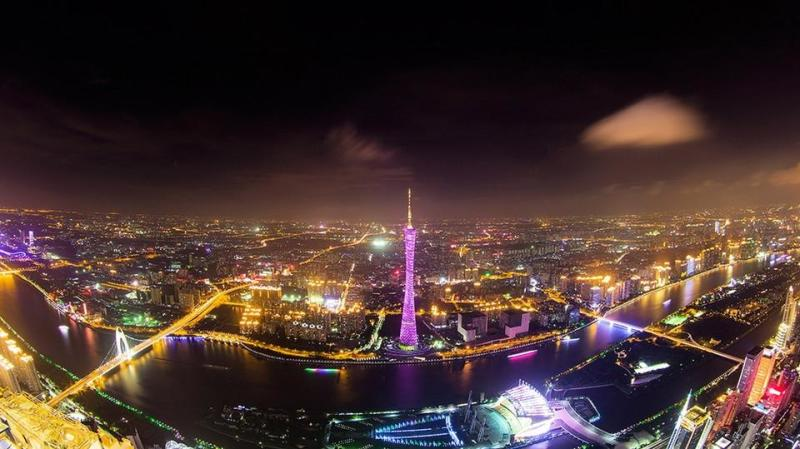

广州
广州是一线城市之一，今天就从几方面聊一下广州
广州历史
 广州历史上名称有 南海郡（前 汉、晋 代、隋 代）、番禺、广州都督府（唐）、广州（宋）、广州路、广州府、番州、兴王府、 广州市等。
广州始建于公元前214年。最早建城时的名字叫 任嚣城。商代时广州地区称为“南越”，周代时又有称为“百粤”、“南海”。春秋战国时，广州地区南越民族与长江中游的 楚国人民已有往来，并归属于楚国，划为南楚，据府志、文物记载， 曾于广州建立“ 楚庭” (也叫楚亭)，归属楚国。现越秀山上有清代建的一座石牌坊，坊上书写“古之楚庭”，故在秦代以前，广州又有“楚庭”之称。
秦始皇二十五年(公元前222年)，秦朝将领 任嚣、首次领兵攻打岭南，失利。后再与 赵佗再率军入岭南，经过多年征战，于秦始皇33年（公元前214年）完成平定岭南的大业，整个岭南由此划入了秦朝的版图。秦始皇征服 岭南后，在广州地区设置南海、象郡、桂林三郡，同时建立番禺（今广州）等县。南海郡含今广东大部，郡治番禺，首任郡尉任嚣，这是岭南历史上第一次划分的行政区， 亦是广州历史上最早的行政建置.
公元217年，交州刺史步骘将州治迁回 番禺，扩大城池，后称为步骘城。226年，孙权将交州分为交州和广州，“广州”由此得名，古代广州曾是三朝十主的古都，分别为 南越国、十国 南汉、 南明.晋代广州仍称南海郡，为州治所在。南北朝南朝宋、齐、梁、西梁时设置广州，治所番禺（今广州）
唐代广州称为广州都督府，是岭南道的道治与都督府治所在地；广州都督府行政界线南至宝安、中山，北至清远， 西至四会、怀集，面积约4．2万平方公里 。917年，刘龑建立 南汉国，定都兴王府（广州）。后梁贞明三年，清海、靖海两军节度使 刘岩立国，国都广州。国号初名大越，年号乾亨，次年改国号为汉，并在广州地区设置咸宁、常康二县， 以模仿帝都长安，史称南汉。
广州区划
1949年，广州市划分为28个区，其中城区20个（逢源、黄沙、西禅、长寿、沙面、陈塘、太平、惠福、靖海、小北、德宣、西山、东堤、汉民、前鉴、大东、东山、洪德、蒙圣、海幢）、水上区1个（珠江区）、郊区7个（南岸、沙河、芳村、石牌、新洲、沥滘、三元里）
1950年，28个区合并为16个区，其中城区8个（长寿、河南、惠福、永汉、太平、越秀、大东、荔湾）、水上区1个（珠江区）、郊区7个（南岸、沙河、芳村、石牌、新洲、沥滘、三元里）
1951年10月，郊区7个调整为4个（白云、芳村、西村、新滘）。
1960年4月，从佛山专区划出花县、从化县归属广州市。同年8月，撤销中区、郊区，设立越秀区、东山区、海珠区、荔湾区4个城区和黄埔区、芳村区、江村区3个郊区。
1985年1月，郊区部分分设天河区、芳村区。
1987年1月，郊区改称为白云区。1988年1月7日，龙门县划归惠州市，新丰县划归韶关市，清远县和佛冈县划归清远市。
2005年4月，撤销东山区并入越秀区；撤销芳村区并入荔湾区；设立南沙区和萝岗区。广州市辖10个区和代管2个县级市。
2014年2月，撤销 黄埔区、 萝岗区，设立新的广州市 黄埔区；撤销从化市、增城市，设立 从化区、 增城区。广州市下辖11个 市辖区。
经济
第一产业广州粮食作物以 籼稻为主，一年两熟。经济作物以蔬菜、水果、花卉等为主。广州是“水果之乡”，主要产 荔枝、 龙眼、 香蕉、 菠萝、 木瓜、 杨桃等。广州的花卉和盆景远近驰名，以阴生观叶植物、高档盆花、鲜切花、岭南盆景为主。阴生观叶植物占中国市场一半以上， 一品红等盆景已成为中国性的生产基地，盆景远销欧美等海外市场.
第二产业广州是中国重要的工业基地、华南地区的综合性工业制造中心，多年的发展已形成了门类齐全、轻工业较为发达、重工业有一定基础、综合配套能力、科研技术能力和产品开发能力较强的外向型现代工业体系。中国40个工业行业大类中，广州就拥有34个。广州工业在广州国民经济中占有重要地位，工业增加值在广州国内生产总值中的比重超过1/3。汽车制造、电子通信和石油化工三大支柱产业的工业产值约占广州工业总产值的1/3。
第三产业广州是华南地区的 金融中心， 华南地区融资能力最强的 中心城市，也是中国外资银行第二批放开准入的城市。广州作为中国最早对外通商贸易的口岸，历史源远流长，在世界上占有相当重要的地位。享誉全球的 中国进出口商品交易会（“ 广交会”）从20世纪50年代至今一直在广州举行，以规模最大、时间最久、档次最高、成交量最多而荣膺“中国第一展”的称号。 琶洲国际会展中心，将把“中国第一展”提升到世界级博览会的层次。
交通
广州公交广州公交车有市区巴士（含夜线）、 广州BRT、城际巴士、机场专线、大学城专线（广字头、大学城字头）、华南楼巴、旅游线、高峰专线、 科学城专线、商务线、地铁接驳线等路线；其中花都区、番禺区、南沙区三个郊区有自己的公交系统，另萝岗K01、K02为免费巴士。
船运广州是1984年开放的14个沿海港口城市之一， 广州港是中国第三大港口，港口货物吞吐量居世界港口第五位，是珠江三角洲以及华南地区的主要物资集散地和最大的国际贸易中枢港，现已与世界170多个国家和地区的500多个港口有贸易往来。 [54] 黄埔新港和新沙港位于 广州东部、珠江的出海口，均为华南地区最大的集装箱码头。 莲花山港、 南沙港、广州开发区穗港码头和增城 新塘港已开通往返 香港的客、货轮，花都区开通往返香港的货轮。广州内河与100多条河道相连接。
地铁截至目前，广州地铁共有10条营运路线，总长为308.7千米，共有167座运营车站（转车站重复计算），全部路线的运营商为广州市地下铁道总公司。
航空广州白云国际机场始建于20世纪30年代，是中国三大国际航空枢纽机场、国家级枢纽机场之一。飞行4F级。已成为中国面向东南亚和大洋洲地区的 第一 门户 枢纽。 二号航站楼将在2018年春节前投入使用，将满足年旅客吞吐量8000万人次、货邮吞吐量250万吨、飞机起降量62万架次的使用需求。